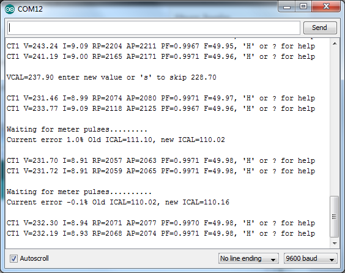
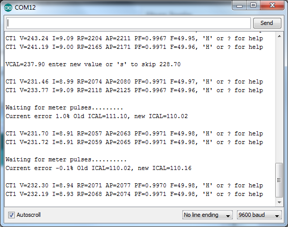

This is another example sketch using the PLL50Hz library, this time to determine the correct value for ICAL, the current scale factor for emonTx.
In order to use this sketch you need a supply meter with a pulse LED and an optical sensor connected to the emonTx.
The advantage of this method is that it is not necessary to know the value of the load, nor does the load need to be purely resistive. It is however preferable to have a large load and for it to remain stable during the test.
It is still necessary to manually enter a value for VCAL, the voltage scale factor, but only if you require accurate values for Vrms and Irms. The value used for VCAL has no affect on the accuracy of the power measurements.
The PLL50Hz library uses the emonTx pulse jack, and hence digital pin 3, as an output to control a triac so it is necessary to connect the optical sensor to a different pin. The default pin in the sketch is digital pin 7 which is available on the CT1 header, P4. If you REALLY want to use the pulse jack then you will have to change the value for LOADPIN1 in PLL50Hz.h to a different pin.
The emonTx LED reflects the state of the optical sensor whenever the sketch is running so it may be used to test that sensor is “seeing” the meter LED (the TSL257 sensor from the shop is quite sensitive to ambient light and adjacent LEDs on the meter so can be difficult to set up).
Here’s a log from a test session...

First ‘V’ is entered to adjust VCAL to 228.7. This value makes the voltage display match the value measured directly.
‘C’ is then entered to run the calibration routine. This routine waits for sufficient meter pulses to be received and then calculates the correct value for ICAL. In this case the default value for ICAL, 111.1, was 1% out and the correct value of 110.02 is displayed. This value is then used for subsequent power calculations and when the test is run for a second time the small error of –0.1% is measured. This is probably well within the accuracy of the hardware.
If sufficient pulses to complete the test aren't received within 30 seconds the test will time out.
ICAL calibration tool
Submitted by MartinR on Tue, 26/02/2013 - 20:10This is another example sketch using the PLL50Hz library, this time to determine the correct value for ICAL, the current scale factor for emonTx.
In order to use this sketch you need a supply meter with a pulse LED and an optical sensor connected to the emonTx.
The advantage of this method is that it is not necessary to know the value of the load, nor does the load need to be purely resistive. It is however preferable to have a large load and for it to remain stable during the test.
It is still necessary to manually enter a value for VCAL, the voltage scale factor, but only if you require accurate values for Vrms and Irms. The value used for VCAL has no affect on the accuracy of the power measurements.
The PLL50Hz library uses the emonTx pulse jack, and hence digital pin 3, as an output to control a triac so it is necessary to connect the optical sensor to a different pin. The default pin in the sketch is digital pin 7 which is available on the CT1 header, P4. If you REALLY want to use the pulse jack then you will have to change the value for LOADPIN1 in PLL50Hz.h to a different pin.
The emonTx LED reflects the state of the optical sensor whenever the sketch is running so it may be used to test that sensor is “seeing” the meter LED (the TSL257 sensor from the shop is quite sensitive to ambient light and adjacent LEDs on the meter so can be difficult to set up).
Here’s a log from a test session...

First ‘V’ is entered to adjust VCAL to 228.7. This value makes the voltage display match the value measured directly.
‘C’ is then entered to run the calibration routine. This routine waits for sufficient meter pulses to be received and then calculates the correct value for ICAL. In this case the default value for ICAL, 111.1, was 1% out and the correct value of 110.02 is displayed. This value is then used for subsequent power calculations and when the test is run for a second time the small error of –0.1% is measured. This is probably well within the accuracy of the hardware.
If sufficient pulses to complete the test aren't received within 30 seconds the test will time out.
Here’s the sketch....
http://openenergymonitor.org/emon/sites/default/files/ical_tool.ino